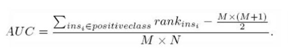
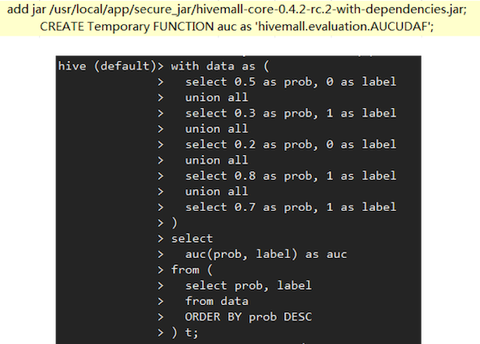

ROC曲线和AUC

计算方法
auc计算部分，除了画出roc曲线，还可以直接计算：

其中,- M为正类样本的数目，N为负类样本的数目
- rank是用的tiedrank
- M为正类样本的数目，N为负类样本的数目
原理
和Wilcoxon-Mann-Witney Test有关，即:
auc=“测试任意给一个正类样本和一个负类样本，正类样本的score有多大的概率大于负类样本的score”，也即auc的物理意义。单机计算
参考：https://github.com/liuzhiqiangruc/dml/blob/master/regr/auc.chive计算
使用hivemall可以方便地计算auc, 如下图
spark计算
// Compute raw scores on the test set
val predictionAndLabels = test.map { case LabeledPoint(label, features) =>
val prediction = model.predict(features)
(prediction, label)
}
// Instantiate metrics object
val metrics = new BinaryClassificationMetrics(predictionAndLabels)
// AUROC
val auROC = metrics.areaUnderROC
println("Area under ROC = " + auROC)
AUPR
- AUPR：Area Under Precision Recall Curve
- AUPR：Area Under Precision Recall Curve
AUC VS AUPR (1)

AUC VS AUPR (2)
Ref:
- http://taoo.iteye.com/blog/760589
- http://cn.mathworks.com/help/stats/tiedrank.html?requestedDomain=www.mathworks.com
- https://github.com/liuzhiqiangruc/dml/blob/master/regr/auc.c